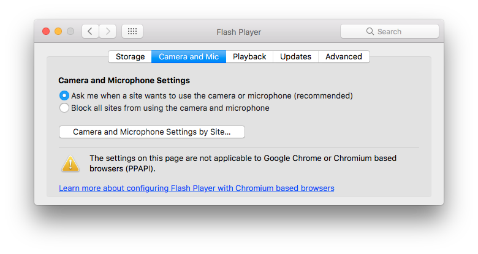
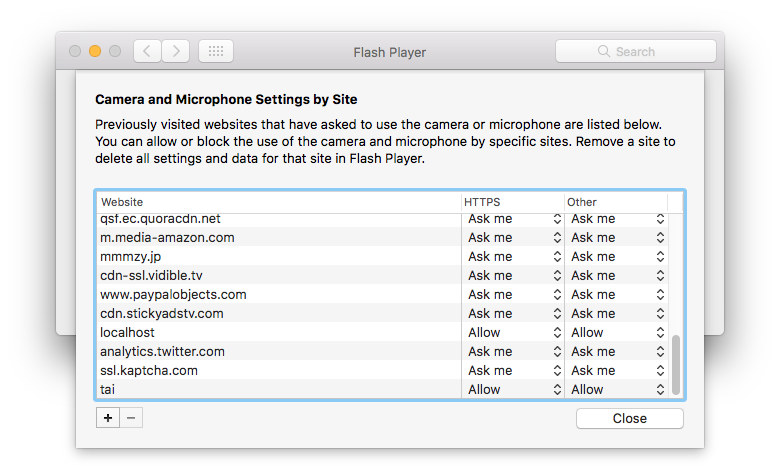

Using web camera in Safari¶
Background¶
Most modern web browsers support WebRTC, which supports easy access to camera from web page scripts. However, Safari (on Mac) does not support WebRTC, so the workaround is to use Flash.
There is a good library “webcamjs” to wrap the browser difference. To make this library to work, security setting is needed. This document describes how to change the setting.
Flash player¶
You need to install and enable Flash player on the target website first.
Visit official instruction: https://helpx.adobe.com/flash-player/kb/enabling-flash-player-safari.html
Security setting for camera¶
When you visit a website that want to access your camera, special permission is needed.
If you are lucky, you have only to click “Allow” button.

Sometimes, the button does not work. In this case, you need to change the setting from “System Preferences”.
- Open Flash Player

- Click “Camera and Mic” tab and open “Camera and Microphone Settings by Site...” dialog 
- Change configuration to “Allow” for target website 